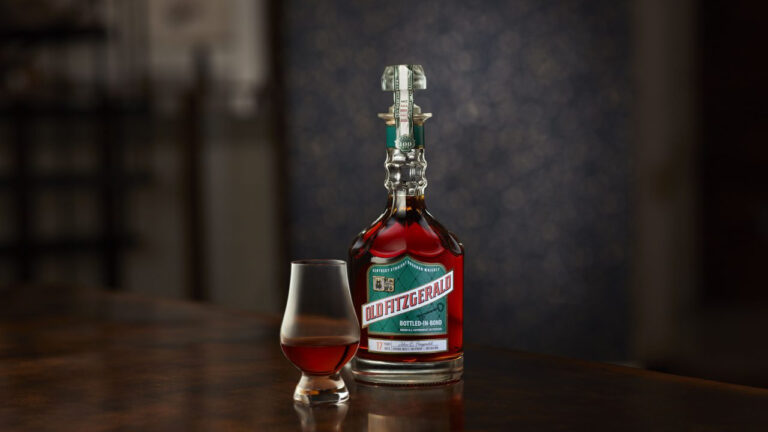

Each spring and fall, a new edition to the Old Fitzgerald Bottled-in-Bond series is released. Inspired by an original 1950's Old Fitzgerald diamond decanter, the packaging and series honor both the history of the Old Fitzgerald brand and the historic Bottled-in-Bond designation. The Old Fitzgerald line is well-known for its distilling pedigree, as the brand was first registered in 1884 and was eventually sold to "Pappy" Van Winkle during Prohibition. In 1999, Heaven Hill bought the brand and began distilling it at Bernheim Distillery in Louisville, KY. Today, in addition to our Old Fitzgerald Decanter Series, the legacy of Old Fitzgerald lives on in our other wheated Bourbons expressions: Larceny Small Batch and Larceny Barrel Proof.
